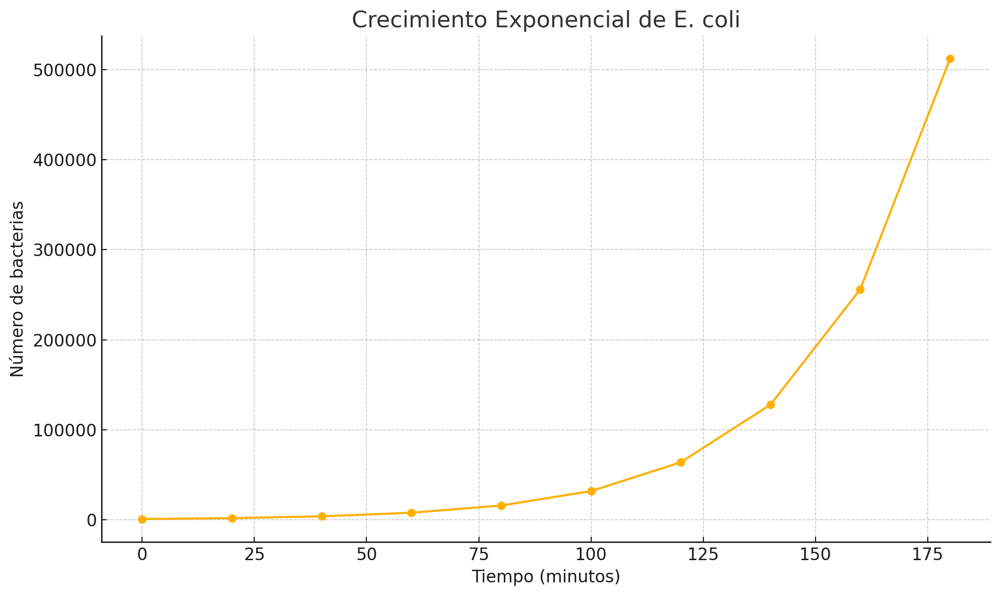

Crecimiento Exponencial de Bacterias
Matematica Superior
Lluvia de Ideas
- Crecimiento de especies silvestres del Cusco
- Crecimiento de delincuencia en el Cusco
- Aumento de la población urbana en una ciudad
- Intereses compuestos de bancos
- Propagación de epidemias
- Crecimiento de un cultivo de bacterias
¿Qué es una función exponencial?
Una función exponencial es una función matemática en la que la variable independiente aparece en el exponente.
Se utiliza para representar fenómenos donde el crecimiento o decrecimiento ocurre de forma acelerada, como el crecimiento bacteriano, el interés compuesto o la propagación de epidemias.
Son funciones del tipo:
\[
f(x) = a^x \cdot n + b
\]
\[
f(x) = a^x \cdot n + b
\]
Donde la función crece según crezca “x” y su ritmo está medido por “a”. El último añadido es el valor “b” que no es sino solo un parámetro arbitrario que desplaza la función a un valor de f(x) mas alto.
- “a” controla el ritmo de crecimiento.
- “b” desplaza verticalmente la función.
Tipos de funciones exponenciales
- Función exponencial natural: Usa la base ( e ).
- Función exponencial general: Usa cualquier base positiva distinta de 1.
\[
f(x) = a^x
\]
- Si ( a > 1 ), la función crece exponencialmente.
\[
f(x) = a^x + b
\]
- ( b ) desplaza la gráfica hacia arriba (si ( b > 0 )) o hacia abajo (si ( b < 0 )) sin cambiar su forma.
Planteamiento del Experimento
Caso: Crecimiento exponencial de E. coli en un medio de cultivo rico.
Supongamos que cultivamos E. coli en un medio de cultivo óptimo (como caldo LB, Luria-Bertani) a 37 °C. Se sabe que, en condiciones ideales, E. coli se divide aproximadamente cada 20 minutos. Se observará el crecimiento durante 3 horas. Consideremos que se trata con una bacteria que duplica su tamaño, a esto se llama reproducción binaria. Por último, se trabajará con una población de mil bacterias.
Datos
- Medio de cultivo: Caldo LB (Luria-Bertani)
- Temperatura: 37 °C
- Frecuencia de división: Cada 20 minutos
- Duración total del experimento: 3 horas = 180 minutos
- Tipo de reproducción: Binaria (duplica su tamaño cada ciclo)
- Población inicial: p=1000 bacterias
Funcion que modeliza el crecimiento de la bacteria E.Coli
Función que modela el crecimiento:
\[
T(t) = 2^{t/20} \cdot p
\]
Donde:
- ( T(t) ): población tras ( t ) minutos.
- ( p = 1000 ): población inicial.
- Base 2 representa reproducción binaria.
Cálculo a los 180 minutos
Para ( t = 180 ):
\[
T(t) = 2^{t/20} \cdot 1000
\]
\[
T(180) = 2^{180/20} \cdot 1000
\]
\[
T(180) = 2^9 \cdot 1000
\]
\[
2^9 = 512
\]
\[
T(180) = 512 \cdot 1000 = 512000
\]
\[
T(180) = 512000 \text{ bacterias}
\]
Gráfico de Crecimiento Exponencial

- Dominio: Tiempo en minutos.
- Rango: Tamaño de la población
Conclusión
- Se asumió disponibilidad ilimitada de nutrientes como el carbono.
- El modelo no pierde credibilidad por ser simple; al contrario, permite comprender mejor el fenómeno.
- Es una base válida para aproximar resultados y luego agregar más variables.
- La precisión del modelo es alta en contextos ideales.
- Se resolvió el tema del alimento, pero existen otros factores no considerados (como la competencia entre bacterias).
Integrantes
- Jose Aurelio Palonco Aimituma
- Jhon Gustavo Ccarita Velasquez
- Ronald Leva Orccohuarancca